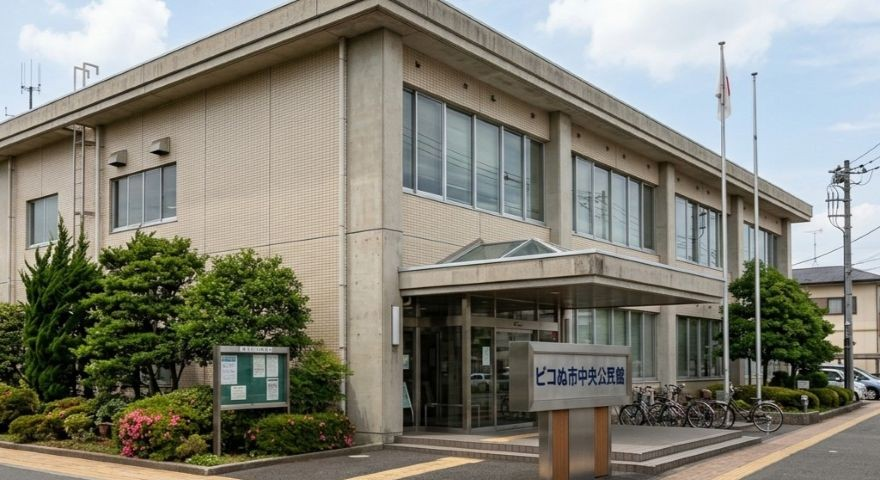
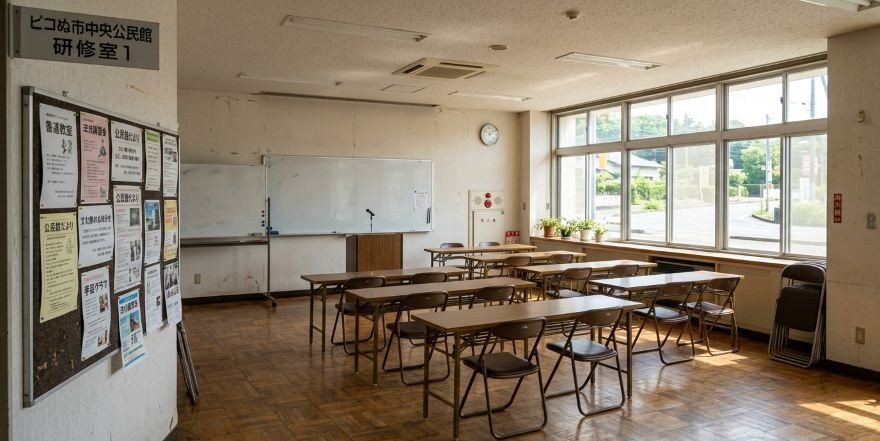

ピコぬ市中央公民館は、市民の学習活動やサークル活動、地域交流などに利用できる施設です。 会議や講座、趣味の集まりなど、さまざまな用途でご利用いただけます。

館内には大会議室、小会議室、和室、調理室などを備えています。 市民のさまざまな活動に利用されています。
主な利用
| 市民講座 | 暮らし、文化、趣味などに関する講座を開催しています。 |
|---|---|
| サークル活動 | 音楽、手芸、読書など、市民による自主的な活動に利用できます。 |
| 地域交流 | 地域の集まりや交流会などに利用できます。 |
| おじさん漫談 | 毎週1回開催。おじさんが最近気になったことなどを話します。 |
定例行事「おじさん漫談」
毎週1回、公民館の一室で開催しています。 内容は毎回異なります。特に結論はありません。
毎週1回、公民館の一室で開催しています。 内容は毎回異なります。特に結論はありません。
施設案内
| 大会議室 | 講座、講演会、地域の集まりなどに利用できます。 |
|---|---|
| 小会議室 | 少人数の会議や打ち合わせに利用できます。 |
| 和室 | 茶道、囲碁、読書会などに利用できます。 |
| 調理室 | 料理教室などに利用できます。 |
| 第3研修室 | 各種研修や市民活動に利用できます。 |
利用案内
| 開館時間 | 9:00〜21:00 |
|---|---|
| 休館日 | 月曜日、年末年始 |
| 所在地 | ピコぬ市中央一丁目2番地 |
| 電話番号 | ぬぬ-ぬかピコ-7564（なごむよ） |
| アクセス | ピコぬ市役所隣。ピコぬ中央駅から徒歩5分。 |
利用について
施設の利用には、事前の申請が必要です。 利用目的や内容によって使用できる部屋が異なる場合があります。
お知らせ
公民館では、市民のみなさまからの講座やサークル活動の提案を受け付けています。 内容によっては、担当者が一度話を聞きます。
公民館では、市民のみなさまからの講座やサークル活動の提案を受け付けています。 内容によっては、担当者が一度話を聞きます。